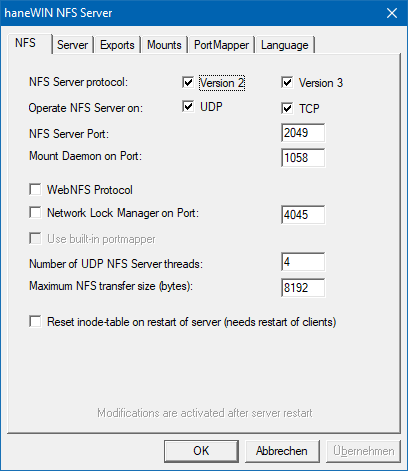
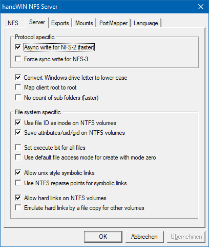
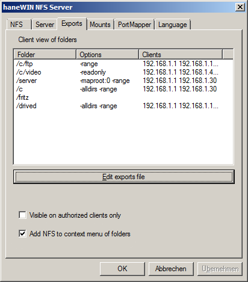
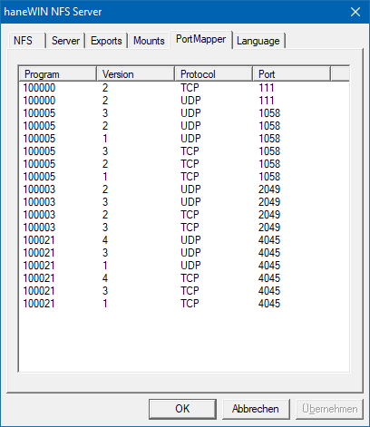
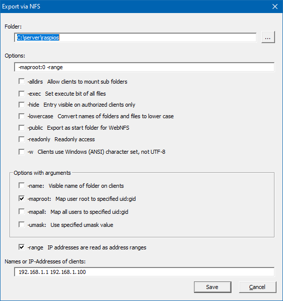

Overview
Installation
Implementation
Users Guide
Support
Overview
This software implements a NFS Server
based on RFC 1813 (NFS 3 Protocol), RFC 1094 (NFS 2 Protocol), RFC 2055 (WebNFS
Protocol) and NLM Protocol based on XNFS specification.
A SunRPC PortMap Daemon is implemented as a separate service to allow
the use of the NFS server also with other PortMapper implementations.
NFS server and PortMap daemon are implemented for Windows
XP/VISTA/20xx/7/8/10 as services for background operation.
A Control Panel applet is implemented for configuring and controlling
the operation of the NFS Server.
The NFS server is also provided as a portable application with an optional integrated PortMap daemon.
The software is implemented as 32- and 64 Bit versions.
The reason for this implementation was not to set up yet another
way of networking for Windows computers, but to give Unix systems
an easy and efficient way to access volumes connected to a Windows computer,
providing disc space, CD/DVD access and data sharing with Unix systems.
Because the server supports hard links, soft links and special devices,
it can be used to run diskless unix clients from a Windows volume.
Installation
- Requirements
- Computer with Windows XP/VISTA/20xx/7/8/10.
- Installation of the NFS server on Windows XP/VISTA/20xx/7/8/10
-
- Install the software by running the setup.
- Enable PortMap Daemon and NFS server in firewall for incoming requests. An example is given in file firewall.bat. The example enables access to the server from clients in your local subnet only.
- With the control panel applet NFS Server you can configure and monitor the service. Administrator rights are required to change settings. Version, Port and other options on the NFS tab require a restart to activate the settings.
- You can either use right mouse button to Insert/Edit/Remove entries
on the Exported folders screen or edit the template exports file under
Preferences-Exports and configure the directories you want to access from
NFS clients.
(The format of the exports file is the same as on Unix. Details are specified below.)
- Running the NFS server as portable application.
-
- Extract the nfsd folder from the zip-Archiv.
- Enable the NFS server in firewall for incoming requests. An example is given in file firewall.bat. The example enables access to the server from clients in your local subnet only.
- Start the NFS Server application and configure options under Preferences. Version, Port and other options on the NFS tab require a restart to activate the settings.
- You can either use right mouse button to Insert/Edit/Remove entries
on the Exported folders screen or edit the template exports file under
Preferences-Exports and configure the directories you want to access from
NFS clients.
(The format of the exports file is the same as on Unix. Details are specified below.)
Implementation
NFS requires Unix-style inodes for indexing files on a file system. The NFS server creates its own inode table in a file called inodes.nfs (created in the NFS server software directory or in the directory specified by registry key InodePath). Because inodes must be created for all files accessed via NFS, depending on the accessed volumes and files on the server the file can grow to some MBytes in size. Generated inodes are unique for the server, therefore the use of junctions is transparent for the server. On native NTFS volumes on Windows7 and higher the 64-Bit NTFS
file id is
used
as inode by default. Because file id's are valid only on a specific
volume, access fails on subfolders mounted as junctions of other
volumes. For the use of file id each volume must be exported by the
server.
On FAT/FAT32 volumes, remote SMB volumes or other mountable volumes the implemented inode table is used.
WebNFS specifies an alternate access method to mount protocol. A client can specify any path in exports as multicomponent start path requesting a first file handle. If the -public option is specified for an exports entry WebNFS access is restricted to this exports entry and the multicomponent path must be a subdirectory of this entry.
For easy use the server does not require user mapping between
windows users names and unix uid's and does not use windows acl for
access.
The unix user is returned as the owner of the
Windows files. Owner
access rights
are set based on the Windows permission bits readonly and hidden.
The Windows file system hidden attribute is used by the NFS
server
to mark unix files as executable.
For unix group and world access rights a default mask of 022 is applied
to the
owner access rights. The mask is configurable per filesystem using the
-umask exports option.
Special files and properties, like Unix soft links and the SUID bit are marked by the system attribute. For Windows 7 and higher the server can use NTFS hard link and reparse point features for implementing unix hard link and symbolic links.
The exports file uses the same basic format as on Unix, but uses different options. Directory specification must follow the Windows notation starting with a drive specification or volume specification e.g.C:\unix
\\?\Volume{6ca75309-178c-11e6-b0b3-806e6f6e6963}
Remote SMB shares can be exported by the NFS server as well. Remote directories MUST use UNC path specification in exports file because driver letters are available only on a per user basis.
The following exports options are supported:
| -name:<sharename> | assigns a name to the exported path as an alternate name for mounting. |
| -alldirs | allows the host(s) to mount at any point within the exported filesystem. |
| -hide | exports entry is visible on authorized clients only. |
| -i32 | restricts inode numbers to 32 bit in case of 64 bit file id. |
| -umask:<mask> | set the umask for group and world permissions on the filesystem, default 022 |
| -readonly | limits access to reading |
| -public | Enables WebNFS access only for this entry and subdirectories. |
| -lowercase | maps all file names to lowercase, otherwise case is preserved. |
| -exec | forces in access rights the x bit for all files. |
| all Unix user-ids and group-ids are mapped to the specified user-id and group-id. | |
| the Unix super user root is mapped to the specified user-id, group-id. Without a mapping entry root will be mapped to user and group NOBODY by default. Because there are a lot of unix boxes running as root only, there is also an option to map to root by default for all entries (see exports section below). | |
| -range | IP adresses are interpreted in pairs as from-to ranges enabling client access from all addresses in a range (more flexible than the unix -net -mask options). |
To export a directory name containing spaces put
the path name in
quotes.
e.g. "c:\my files" ...
A directory can be specified more than once for different clients.
On the client side use standard Unix notation for
mounting
drives and directories:
C: --> /c
D:\nfs --> /d/nfs
e.g.: Directory D:\nfs is mounted on /mnt/nfs.
mount -t nfs 192.168.1.4:/d/nfs /mnt/nfs
For mounting Windows remote network shares use the following
notation:
\\server\share --> //server/share
e.g.: Directory \\amilo\nfs is mounted on /mnt/nfs.
mount -t nfs 192.168.1.4://amilo/nfs /mnt/nfs
For mounting a directory by volume GUID use the following notation:
\\?\Volume{6ca75309-178c-11e6-b0b3-806e6f6e6963}\dir -->
//?/Volume{6ca75309-178c-11e6-b0b3-806e6f6e6963}/dir
e.g.: Directory //?/Volume{6ca75309-178c-11e6-b0b3-806e6f6e6963}/dir
is mounted on /mnt/nfs.
mount -t nfs
192.168.1.4://?/Volume{6ca75309-178c-11e6-b0b3-806e6f6e6963}/dir
/mnt/nfs
With the -name option a share name can be
assigned to an exported Windows path:
e.g..: Windows path D:\OwnFiles\music\mp3 is exported
with option -name:mp3.
It is mounted under Unix with the command
mount -t nfs 192.168.1.4:/mp3 ...
The real Windows path is invisible for the Unix user.
Unmodified entries in the exports list are still valid without remount after restarting the server. If a mounted entry was modified a client must remount. For UDP connected clients the server can be restarted without remounting at the client, for TCP connections it depends on the client implementation.
Users Guide
The Info Box at startup of the Control Panel is displayed only for the unregistered version.
Running the NFS server as a Service on Windows XP/VISTA/20xx/7/8/10
PortMap Daemon and NFS Server are implemented as services for background operation. The entries created in the start menu execute the following commands.
- The PortMap Daemon is installed and started by the command:
PMAPD -install
The service can be started and stopped manually by the service control panel. - The NFS Server service is installed and started by the command:
NFSD -install PMAPDaemon
The service depends on the service PMAPDaemon. If you use a Portmapper from another vendor use their service name for the portmapper. If no service name is specifed no dependency check is applied.
The service can be started and stopped manually by the service control panel. - Run
PMAPD -remove
or
NFSD -remove
to stop and remove the PortMap daemon or NFS server service.
The NFS Server control panel menu
- Service
- Entries can be used to Start and Stop the NFS Server Service
- View log
- Displays the server log
- Preferences
- NFS
-

The server is started for NFS-2 and NFS-3 protocol on transport protocol UDP and TCP by default. Disabling NFS-2 disables also mount version 1 and NLM version 1 protocol.
Disabling NFS-3 disables mount version 3 and NLM version 4 protocol.
If transport UDP or TCP is disabled it is also disabled for mount and NLM protocol. Some clients use TCP for NFS but always use UDP for mount. Please check if mount failsWebNFS enables client mount through public file handle NFS access.
The NFS Server operates multithreaded. For TCP connections two threads are created per connection. For UDP the configured number of threads is created to handle concurrent access from clients.
For NFS-2 client and server must use the same maximum NFS transfer size. For NFS-3 server and client choose a common value by handshake transaction.
To clean up the internal inode database it could be reset at server start. Because new inode numbers are assigned in this case, clients have to remount after server restart.
- Server
-

Windows uses upper case letters for drive letters. On Unix normally lower case is preferred in path names. The option maps drive letters for all clients to lower case.
Linux clients can create a temporary file with no access bits set and are allowed to write to the file. Because this fails on Windows you can force the server to use the default access in case no access rights are specified.
The behaviour was not observed for NetBSD/FreeBSD clients.The Unix super user root is mapped to the access rights of user NOBODY by default. This could be overritten in exports using -maproot:0 on a per entry basis. Because there are a lot of unix boxes running as root only, root could be map to root by default for all entries.
The Windows file system hidden attribute is used by the NFS server to mark unix files as executable. This makes executable files hidden on Windows. To avoid this all files could be marked as executable either by option -exec for a single exports entry or using the option for all entries.
The NFS server can use the Windows 64-bit file id as inode number. It is supported on NTFS volumes for Windows 7 and higher releases of Windows. On other volumes the server internal inode implementation is used. This also includes remote SMB shares displayed as of type NTFS.
The NFS server can store access modes, uid and gid on local NTFS filesystems. The server uses the Windows "creation time" not "alterntate streams" entry to store the information(limited to 16-Bit per UID and GID). Saving the attributes of a unix file creates a much better compatibillity for unix diskless clients and in case of remote boot.
Unix hard links are supported on NTFS volumes. For non NTFS volumes a hard link can be emulated by creating a copy of the file.
- Exports
-

displays exported folders as seen from clients (unix showmount -e) and allows direct editing of the exports file(not recommended, but usefull if the parser fails to load the exports file). Exported folders are stored in unix style exports file.
-
By default all entries in exports file are visible for all clients requesting the exports list. For improved security it could be restricted to only those entries accessible for a client.
- Mounts
-

mounted folders as seen from clients (unix showmount) Displays a list of clients that have directories mounted .
To survive a reboot entries are saved in file mounttab. Negative side effect, UDP clients that don't unmount may still appear in the list after client shutdown and server reboot.
- Portmapper
-

displays RPC programs registered with the SunRPC PortMap daemon.
- View
-
Displays either the Exported Folders list or the Mounted Folder list. Clients are displayed by name or IP address depending on the resolve option. A user with administrator rights can insert, edit or remove entries from the exported folders list using context menu of an entry.

The server uses UTF-8 character set by default. For most Linux based clients UTF-8 should be the best choice. If required Windows character set could be selected.
After removing entries from the export folder list already connected clients can still access the server based on removed entries. New clients can use only the updated list.
The mounted folders list displays folder, type of connection and client. A user with administrator rights can use the context menu of an entry to disconnect a client.
- Help
- starts a HTML browser displaying the manual.
- Registration
- prompts for the license key and your name, company. Check the Info menu to find out if the license information was accepted.
- About...
- displays program version information.
Support
The latest version is available on www.hanewin.net. For comments, questions, problems please use our contact form.